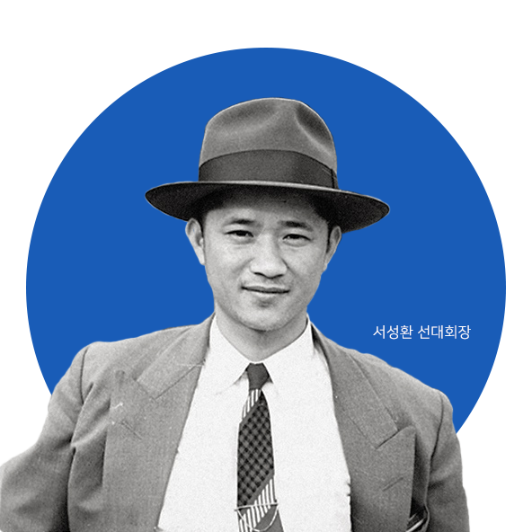

아모레퍼시픽은 태평양 너머의 더 넓은 세상을 변화시키겠다는 창업정신을 이어받아
자연과 인간에 대한 아시아의 깊은 지혜로 보다 넓은 세계로 향하고 있습니다.
-
현재 아모레퍼시픽을 이끌고 있는 서경배 회장은 1997년 ㈜태평양 대표이사 취임 이래, ‘미’와 ‘건강’이라는 기업 가치를 중심으로 회사의 역량을 강화하고, 탁월한 경영능력과 남다른 리더십으로 아모레퍼시픽을 대한민국 대표 뷰티기업을 넘어 세계적인 글로벌 뷰티기업으로 성장시키고 있습니다.
서경배 회장은 아시안 뷰티(Asian Beauty)가 전 세계 미(美)의 패러다임을 선도할 새로운 척도가 될 것이라는 강한 확신을 갖고 있으며, 고객 중심적 사고와 적극적인 투자, 그리고 지속적인 연구 개발 노력으로 전 세계 고객에게 이전에는 경험하지 못했던 새로운 아름다움을 선보이고자 노력하고 있습니다.
서경배 회장과 아모레퍼시픽의 모든 임직원들은 아모레퍼시픽이 아름다움으로 세상을 변화시키는 꿈을 실현하는 '원대한 기업(Great Beauty Company)'이자 전 세계 고객들로부터 존경받는 기업으로 발돋움할 수 있도록 앞으로도 변함없이 정진할 것입니다. -

창업자 장원(粧源) 서성환 선대회장은 가내수공업으로 제조하던 가업을 이어받아 이 땅에 아름다움과 건강의 역사를 써 내려왔습니다. 1945년 해방을 계기로 태평양화학공업사를 창립하며 ‘기술과 정성으로 아름다움과 건강을 창조하여 인류에 공헌한다’는 한결같은 꿈으로 기업을 이끌어 왔습니다.
날림으로 만들어진 제품이 기승하던 시절에 품질에 대한 자신감을 바탕으로 처음으로 상표를 내건 화장품을 만들었고, 당시의 시대적인 상황에 비추어 보면 혁신에 가까웠던 우리나라 최초의 화장품 연구실을 세웠습니다. 한발 앞선 도전정신으로 그 누구보다 좋은 제품을 만들어 태평양 너머 세상을 만나리라는 큰 뜻을 품고 대한민국 화장품 산업을 선도했습니다.
또한, 서성환 선대회장은 우리나라의 차 문화가 쇠퇴해가는 것을 안타깝게 여겨 불모지였던 제주에 차 밭을 성심으로 일구어 우리 차 문화의 대중화에 크게 공헌했습니다. -
아모레퍼시픽의 뿌리는 창업자 장원 (粧源) 서성환 선대회장의 어머니인 윤독정 여사가 손수 만들어 팔던 동백 머릿기름에서 시작되었습니다. 1930년대, 머릿기름을 발라 반듯하게 빗어 넘긴 하얀 가르마는 아름다운 여인의 상징이었습니다.
특히, 윤독정 여사는 동백 머릿기름 속에 고이 담긴 우리네 아름다움의 가치를 알았기에 까다롭게 좋은 원료만을 구하고 어렵사리 익힌 기술을 끊임없이 개선해가는 노력을 통해 최고의 동백 머릿기름을 만들어 파는 것으로 고객의 신뢰를 얻었습니다.
뿐만 아니라 윤독정 여사는 손님, 친구, 지나가던 나그네를 위해 언제나 집안 한 켠에 따뜻한 밥 한 끼를 준비해 두는 넉넉한 마음씨를 가지고 있었습니다. 남다른 생활력과 명민함, 그 속의 너그러움과 인정을 바탕으로 사업은 날로 번창하였고, 이런 어머니의 곁에서 일을 도우며 서성환 선대회장은 진정한 상인의 길을 향한 개성상인의 자존심과 미덕을 새길 수 있었습니다.